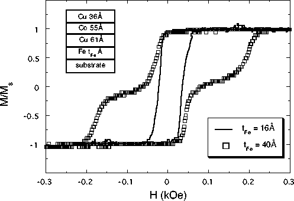
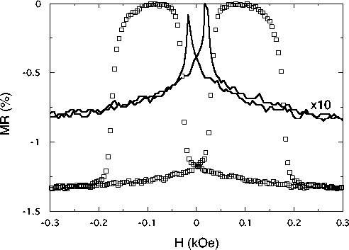

Figure 1: a) Magnetization curves for two
Fe(tFe)-Cu(61Å)-Co(55Å)- Cu(36Å)
sandwiches grown at 160 °C. The curve indicated by
squares is for a tFe = 40Å sandwich grown on
silicon, and the solid line is for a tFe =
16Å sandwich on glass. The plateau region in the
tFe=40Å curve corresponds to the region
where the Fe and Co moments are antialigned.

b) Transverse (applied field perpendicular to current) MR
traces for two
Fe(tFe)-Cu(61Å)-Co(55Å)-Cu(36Å)
sandwiches both grown on semi-insulating silicon. The
tFe=40Å sample is the one whose
magnetization curve is shown in a). The
tFe=16Å sample was deposited at the same
time as the tFe=16Å sample on glass whose
data are shown in a). The MR data for the
tFe=16Å sample are multiplied by a factor of
10 for clarity. The MR is defined by Dr/r = [rmax
- r(H=Hs)]/r(H=0).